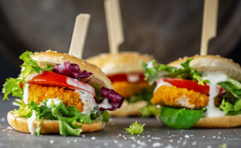

သွားရေစာတွေကြောင့် ဆယ်ကျော်သက်တွေ ကြုံရနိုင်တဲ့ ပြင်းထန်တဲ့ဘေးထွက်ဆိုးကျိုးများ

သွားရေစာတွေကြောင့် ဆယ်ကျော်သက်တွေ ကြုံရနိုင်တဲ့ ပြင်းထန်တဲ့ဘေးထွက်ဆိုးကျိုးများ
အိမ်က ဆယ်ကျော်သက်လေးတွေအတွက် အိမ်မှာ သေချာ ပြုလုပ်ပေးထားတဲ့ အစားအစာတွေကိုပဲ ကျွေးဖို့ ကြိုးစားဖူးပါသလား။ အိမ်လုပ် အစားအစာပဲ စားပြီး သွားရေစာတွေ မစားဖို့ ဆယ်ကျော်သက်တွေကို တိုက်တွန်းမယ် ဆိုရင်တော့ အောင်မြင်ဖို့ ရာခိုင်နှုန်း တော်တော်ကို နည်းပါလိ်မ့်မယ်။
ဆယ်ကျော်သက်တွေအတွက် သွားရေစာဆိုတာ ခုံခုံမင်မင် စားတတ်ကြတဲ့ အစားအသောက်တွေပဲ ဖြစ်ပါတယ်။ ဒါကြောင့် သွားရေစာတွေစားတဲ့အတွက် ဆယ်ကျော်သက်တွေမှာ ဘာအကျိုး သက်ရောက်မှုတွေ ဖြစ်လာနိုင်သလဲဆိုတာ သိထားဖို့ လိုလာပါတယ်။
ဒီဆောင်းပါးလေးမှာ ပြောပြပေးမှာ ဖြစ်ပါတယ်။
သွားရေစာ ဆိုတာဘာလဲ
သွားရေစာဆိုတာကတော့ အာဟာရ တန်ဖိုး သိပ်မပါဝင်ဘဲ အရသာ ကောင်းရုံ၊ စားကောင်းရုံလောက်သာ ပြုလုပ်ထားတဲ့ မုန့်တွေ ဖြစ်ပါတယ်။ ဒါကြောင့် သွားရေစာ အများစုဟာ ကျန်းမာရေးနဲ့ မညီညွတ်ပါဘူး။ တချို့ဆို ကျန်းမာရေးကိုပါ ထိခိုက်စေနိုင်ပါတယ်။ ဆယ်ကျော်သက်တွေကြ
ား ရေပန်းစားနေတဲ့ သွားရေစာတွေကတော့-
- ဟမ်ဘာဂါ၊
- အသားချောင်း၊
- သကြားလုံး၊
- ဆိုဒါပါတဲ့ အချိုရည်တွေ၊
- ပီဇာတွေနဲ့ တခြားတခြား သွားရေစာတွေမျိုးစုံ ရှိပါတယ်။
သွားရေစာအများစုမှာတော့ သကြားတွေ၊ ဆားတွေ၊ အဆီတွေ အများကြီး ပါပါတယ်။ ဒါကြောင့် ဒါတွေကို စားလိုက်တဲ့အခါ ဗိုက်မြန်မြန် ပြည့်ပြီး တက်ကြွလာသလို ခံစားရပါတယ်။ ဒါပေမဲ့ လေ့လာတွေ့ရှိချက်တွေအရ သွားရေစာတွေဟာ ဆေးစွဲသလိုပဲ စွဲလမ်းစေနိုင်တယ်လို့တေ
ာင် ဖော်ပြကြပါတယ်။ ဒါ့အပြင် သွားရေစာတွေက ဆယ်ကျော်သက်တွေအပေါ် သက်ရောက်စေတဲ့ အကျိုးသက်ရောက်မှုတွေလည်း ရှိပါသေးတယ်။
ဒါတွေကတော့-
အဝလွန်တာ
အဝလွန်တာကတော့ သွားရေစာတွေကြောင့် ဖြစ်တဲ့ ဆိုးကျိုးတွေထဲမှာ အဖြစ်အများဆုံးပဲ ဖြစ်ပါတယ်။ သွားရေစာ အများစုမှာတော့ သကြားတွေ၊ ဆားတွေ၊ အဆီတွေ အများကြီး ပါပါတယ်။ ဒါကြောင့် သွားရေစာတွေကို စွဲစွဲလန်းလန်းစားပြီဆိုရင်တော့ အဝလွန်ဖို့ အလားအလာ
ရှိလာပြီ ဖြစ်ပါတယ်။ အဝလွန်ပြီဆိုရင်တော့ နောက်ဆက်တွဲ ဆိုးကျိုးတွေ ဖြစ်တဲ့ ဆီးချို၊ ကင်ဆာ၊ အဆစ်နာတာတွေ ဖြစ်လာနိုင်ပါတယ်။
သွေးတိုးတာ
သွားရေစာအများစုမှာ ဆိုဒီယမ်ဓာတ် ပါဝင်မှု မြင့်နေတတ်ပါတယ်။ ဒီလို သွားရေစာတွေကို ပုံမှန်စားနေမယ်ဆိုရင်တော့ တဖြည်းဖြည်း သွေးတိုးလာမှာ ဖြစ်ပါတယ်။ သွေးတိုးရှိလာပြီဆိုရင်တော့ နောက်ဆက်တွဲ အနေနဲ့ နှလုံးရောဂါတွေ၊ နောက်ဆုံး လေဖြတ်တာထိ ဖြစ်နိုင်ပါတယ်။
ကြီးထွားမှု နှုန်းနှေးတာ
ဆယ်ကျော်သက်အရွယ်မှာ ကိုယ်ခန္ဓာ ကြီးထွားဖွံ့ဖြိုးမှုဟာ အရေးအကြီးဆုံး ဖြစ်ပါတယ်။ သွားရေစာတွေကို စားတာကြောင့် ကိုယ်ခန္ဓာ ကြီးထွားဖွံ့ဖြိုးမှုအတွက် လိုအပ်တဲ့ အာဟာရဓာတ်တွေ ပြည့်ဝစွာ မရရှိတဲ့အတွက် ကြီးထွားဖွံ့ဖြိုးမှု နှေးတာတွေ ဖြစ်နိုင်ပါတယ်။
သွားပိုးစားတာ
သွားရေစာတွေ အထူးသဖြင့် အအေးတွေ၊ သကြားလုံးတွေက သကြားပါဝင်မှု မြင့်တဲ့အတွက် သွားပိုးစားတာတွေ ဖြစ်စေကာ သွားကျန်းမာရေးကို ထိခိုက်စေနိုင်ပါတယ်။
အာရုံစူးစိုက်မှု နည်းပြီး နုံးနေတာ
သွားရေစာတွေကို စွဲစွဲမက်မက် စားနေပြီဆိုရင်တော့ သေချာတာက အာဟာရ မျှတတဲ့ စားသောက်မှုပုံစံ မဟုတ်တော့တာတော့ သေချာပါတယ်။ ဒါကြောင့် လိုအပ်တဲ့ ဗီတာမင်တွေ၊ အာဟာရဓာတ်တွေကို မရနိုင်တော့ပါဘူး။ ဒါကြောင့် သွားရေစာတွေကို စွဲစွဲမက်မက် စားနေတဲ့
ဆယ်ကျော်သက်တွေက အမြဲလိုလို နုန်းနေတတ်ကြပါတယ်။ ညဘက် ကောင်းကောင်း အိပ်ပျော်ပေမဲ့လည်း မနက်ဆို ငိုက်နေတတ်တာမျိုးတွေ၊ အမြဲလို နုံးနေတတ်တဲ့အတွက် အာရုံစူးစိုက်မှုလည်း လျော့နည်းလာမှာ ဖြစ်ပါတယ်။
ဆယ်ကျော်သက် အရွယ်ဆိုတာကတော့ ဟော်မုန်း အပြောင်းအလဲတွေ ဖြစ်ပြီး ကိုယ်ခန္ဓာကြီးထွား ဖွံ့ဖြိုးမှုတွေ ဖြစ်လာနေတဲ့အချိန် ဖြစ်တဲ့အတွက် ခန္ဓာကိုယ်အတွက် ဗီတာမင်တွေ၊ အာဟာရဓာတ်တွေ အများကြီး လိုအပ်နေတဲ့ အချိန် ဖြစ်ပါတယ်။ ဒါကြောင့် ဒီလို အရေးကြီးတဲ့အချိန်မှာ
သွားရေစာတွေကိုပဲ စွဲစွဲလန်းလန်း စားမနေဘဲ အာဟာရပြည့်တဲ့ အစားအစာတွေကိုလည်း စားရင်း၊ တစ်ခါတစ်လေ သွားရေစာတွေကိုလည်း စားရင်း ဆယ်ကျော်သက် အရွယ်ကို ပျော်ပျော်ရွှင်ရွှင် ဖြတ်သန်းကြဖို့ တိုက်တွန်းလိုက်ရပါတယ်။
Source-Dr.AZK